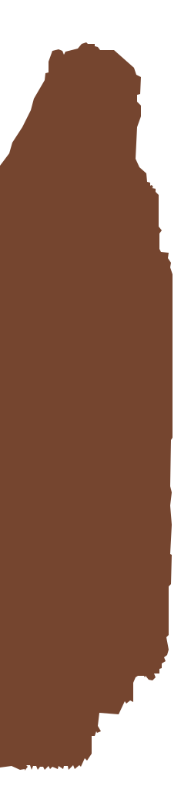

01 · Especialidade
Posta mirandesa
Carne de raça mirandesa, grelhada e servida com o respeito que merece.

Capa d’HonrasMiranda do Douro
Tradição à mesa · Miranda do Douro
Cozinha portuguesa, raízes transmontanas e uma mesa preparada para o receber.
Reservar mesa ↗O nosso nome evoca a capa de honras, símbolo maior da identidade mirandesa. É com o mesmo orgulho pela nossa terra e pelas suas tradições que o recebemos: com bons sabores, simplicidade e hospitalidade.
Conheça a nossa casa →

Da cozinha para a mesa
Receitas de inspiração tradicional, ingredientes que contam a história da região e o prazer de uma refeição sem pressa.
Carne de raça mirandesa, grelhada e servida com o respeito que merece.

Um clássico à mesa, preparado de diferentes maneiras.

Cordeiro, costeleta e outros sabores de inspiração transmontana.

Pratos variados, entradas e sugestões para partilhar.
Um pouco de nós
Uma pequena janela para os sabores e o ambiente do Capa d’Honras.


Estamos à sua espera
Passe por Miranda do Douro e venha descobrir os sabores da nossa casa.
Ligar para reservar ↗Todos os dias
12:00–15:30
19:00–21:30